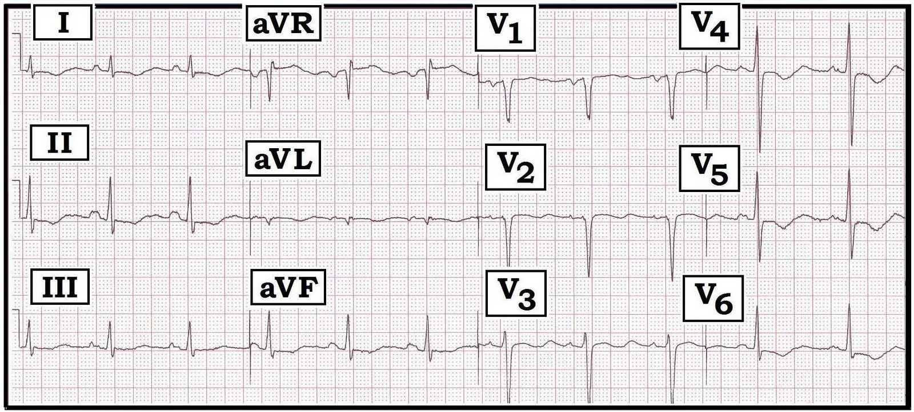
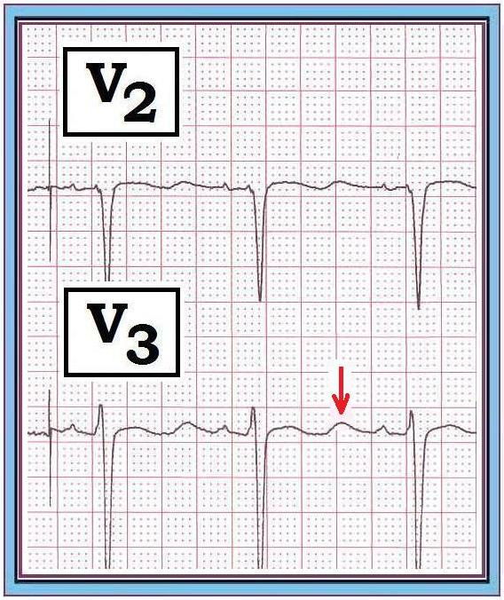
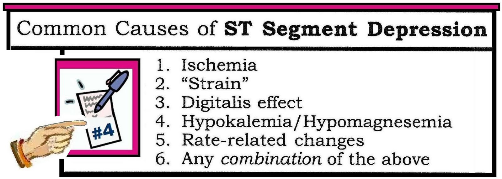
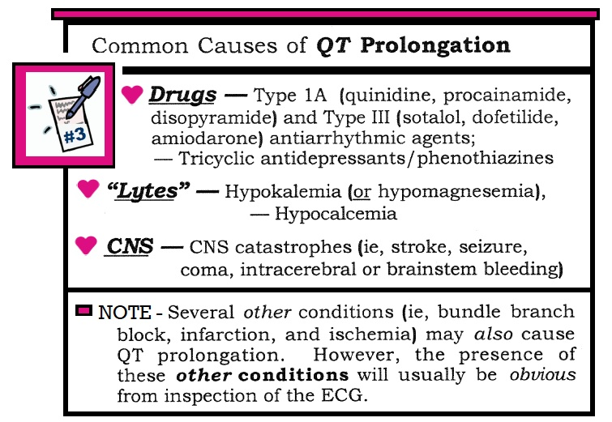
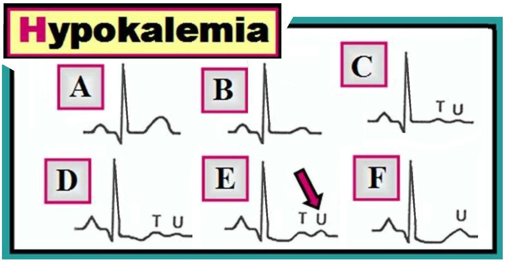

Ôn tập đọc điện tâm đồ – Số 27 (Thay đổi ST-T - Sóng QT-U - Hạ kali máu-Thiếu máu cục bộ)
Hãy đọc điện tâm đồ dưới đây, ghi ở một bệnh nhân có tiền sử lạm dụng rượu và đau ngực không điển hình. Có thiếu máu cục bộ không? — có rối loạn điện giải không?


DIỄN GIẢI: Có loạn nhịp xoang. Khoảng PR và QRS bình thường. Tuy nhiên — khoảng QT dài (rõ ràng dài hơn một nửa khoảng R‑R). Trục bình thường (khoảng +65°). Có thể có LAA (bất thường nhĩ trái) do phần âm của sóng P ở chuyển đạo V1 khá sâu — nhưng ngoài ra không có dấu hiệu lớn buồng tim.
- Thay đổi QRST: Có sóng Q ở aVL, và dạng QS ở V1,V2. Vùng chuyển tiếp hơi muộn. Dấu hiệu nổi bật nhất là ST-T dẹt/chênh xuống lan tỏa, kèm thêm sóng T đảo ngược đối xứng ở các chuyển đạo V4,V5,V6. Khoảng QT kéo dài rõ rệt, và có sóng U ở nhiều chuyển đạo (thấy rõ nhất ở V3, như mũi tên ĐỎ chỉ ở Hình 2 dưới đây).


NHẬN ĐỊNH LÂM SÀNG: Các thay đổi ST-T lan tỏa thấy ở Hình 1 có thể do bất kỳ nguyên nhân thường gặp nào của ST chênh xuống. Để dễ nhớ — các nguyên nhân thường gặp này được liệt kê trong Bảng 1, gồm thiếu máu cục bộ; “tăng gánh” (strain) do LVH; rối loạn điện giải (hạ kali máu; hạ magnesi máu); tác dụng của digoxin; và/hoặc nhịp nhanh (Xem thêm ECG Blog #26). Với tiền sử đau ngực — phải cân nhắc thiếu máu cục bộ có thể cấp tính (khó biết sóng T đảo ngược ở Hình 1 có phải là dấu hiệu mới hay không NẾU không có điện tâm đồ cũ để so sánh).


Khoảng QT (hay “Q‑U”) dài rõ rệt ở Hình 1 phải gợi ý đến một hoặc nhiều nguyên nhân thường gặp của QT kéo dài. Để dễ nhớ — các nguyên nhân thường gặp này được liệt kê trong Bảng 2, gồm “Thuốc – Điện giải – và Biến cố thần kinh trung ương cấp nặng” (Xem thêm ECG Blog #4). Các dấu hiệu điện tâm đồ cùng tiền sử lạm dụng rượu trong case này nên khiến bạn xếp hạ kali máu (và/hoặc hạ magnesi máu) ở vị trí cao trong danh sách. Việc phát hiện sóng U ở nhiều chuyển đạo càng ủng hộ rối loạn điện giải là một yếu tố góp phần vào các thay đổi ST-T trong case này.


Đối chiếu lâm sàng / SỬ DỤNG các “DANH SÁCH”: Cần đối chiếu lâm sàng để xác định (các) nguyên nhân có khả năng của những bất thường ST-T ở Hình 1. Ít nhất — chúng tôi nghi ngờ thiếu máu cục bộ và hạ kali máu (và/hoặc hạ magnesi máu). Điện giải đồ, troponin nhiều lần và điện tâm đồ theo dõi/so sánh với các bản ghi trước sẽ giúp làm rõ, mặc dù đôi khi không thể xác định chính xác từng yếu tố góp phần …
- Điện tâm đồ trong bài Blog này là một ví dụ tuyệt vời về cách chúng tôi dùng các “Danh sách” để hỗ trợ đọc điện tâm đồ. Chúng tôi cố ý giới hạn cả số lượng lẫn độ dài của mỗi “Danh sách” trong 6 danh sách của mình để dễ nhớ. Khi nhận ra một dấu hiệu điện tâm đồ cụ thể (chẳng hạn QT kéo dài hay ST chênh xuống) — việc nhớ lại các bệnh cảnh trong danh sách tương ứng giúp chúng ta nhanh chóng khoanh vùng chẩn đoán phân biệt (Xem Bảng 1 và 2 ở trên — cùng với Bảng 1 trong Blog #23 và Bảng 1 trong Blog #26).
-----------------------------------------------
Thay đổi điện tâm đồ trong hạ kali máu: Chúng tôi kết thúc bài này bằng việc ôn nhanh các thay đổi điện tâm đồ của hạ kali máu. Trái với tăng kali máu — điện tâm đồ (theo kinh nghiệm của chúng tôi) không phải là công cụ quá đáng tin cậy để đánh giá hạ kali máu nhẹ đến vừa, vì cả độ nhạy lẫn độ đặc hiệu của các dấu hiệu điện tâm đồ đối với hạ kali máu chưa đến mức nặng đều tương đối thấp. Dù vậy — các thay đổi cần tìm được minh họa theo trình tự ở Hình 3.
- A — là ST-T bình thường.
- B — cho thấy sóng T dẹt, thường là thay đổi sớm nhất.
- C và D — Cùng với ST-T dẹt (và đôi khi ST chênh xuống nhẹ) — xuất hiện sóng U. Có thể thấy hình ảnh "giả P phế" (pseudo-P-pulmonale) (với sóng P nhọn).
- E và F — ST chênh xuống rõ hơn và sóng U tăng biên độ (mũi tên), cho đến khi cuối cùng sóng U vượt trội sóng T. Lúc này, việc phân biệt sóng T và sóng U có thể gần như không thể (tức là có thể là “Q-U" kéo dài chứ không phải “Q-T” kéo dài — như ở F).


Như đã nhấn mạnh ở trên — bản thân sóng U không đặc hiệu cho hạ kali máu. Sóng U cũng có thể gặp ở bệnh nhân LVH và/hoặc nhịp chậm, hoặc đôi khi là một biến thể bình thường. Tuy nhiên, bối cảnh và các dấu hiệu điện tâm đồ trong case này (tiền sử dùng rượu cùng với ST-T dẹt lan tỏa và sóng U biên độ tương đối lớn ở nhiều chuyển đạo) gợi ý mạnh đến khả năng rối loạn điện giải.
- ĐIỂM THEN CHỐT (PEARL) #1: Khi bối cảnh lâm sàng "phù hợp" (tức là có khả năng thuận lợi cho hạ kali máu) — đến lúc sóng U trở nên lớn đến mức lớn hơn (hoặc gần lớn bằng) sóng T — thì độ đặc hiệu của điện tâm đồ đối với hạ kali máu mức độ đáng kể tăng lên rất nhiều.
- ĐIỂM THEN CHỐT (PEARL) #2: Hạ magnesi máu gây ra các thay đổi điện tâm đồ gần như giống hệt hạ kali máu. Thiếu magnesi toàn cơ thể thường gặp kèm theo các bất thường điện giải khác (tức là hạ natri, kali, calci hoặc phosphat); nhồi máu cơ tim cấp; ngừng tim; dùng digoxin/lợi tiểu; sử dụng và lạm dụng rượu; suy giảm chức năng thận.
----------------------------------------------------
- Để biết thêm thông tin — XEM:

- Xem thêm ECG Blog #26 -
- Xem Mục 11.0 về Rối loạn điện giải (từ ECG-2014-ePub) — Bấm để tải = http://tinyurl.com/ECG-11-Lytes (Phần về hạ kali máu bắt đầu ở Mục 11.7).
----------------------------------------------------